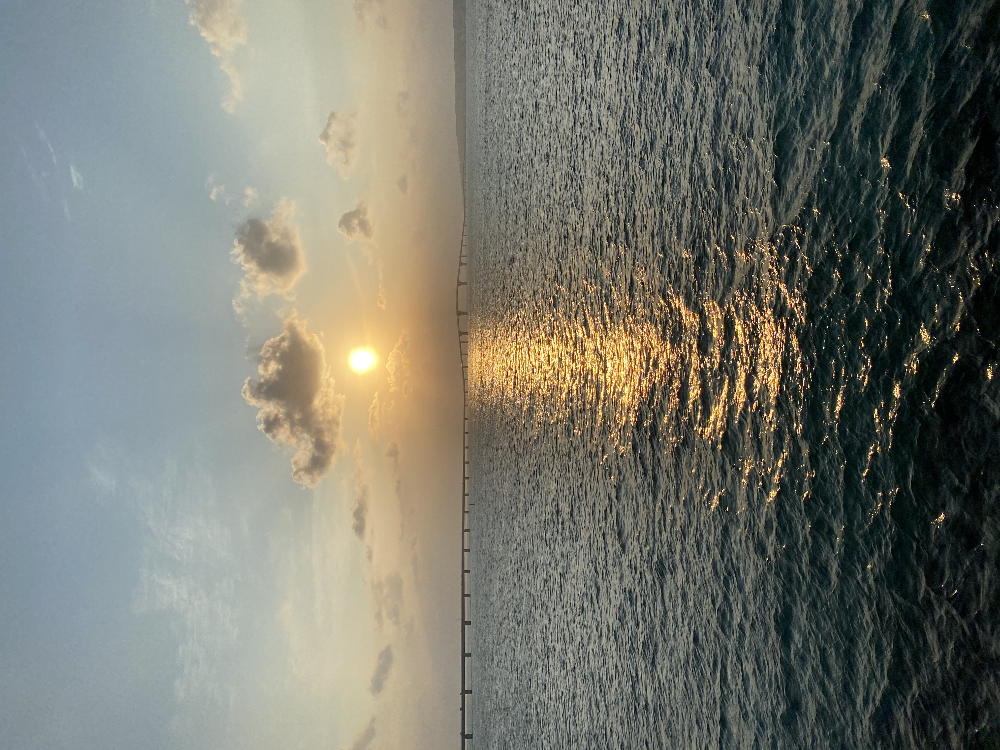
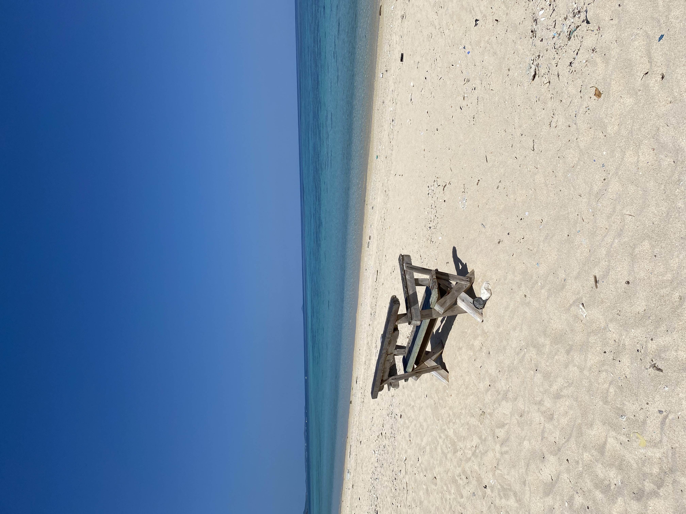
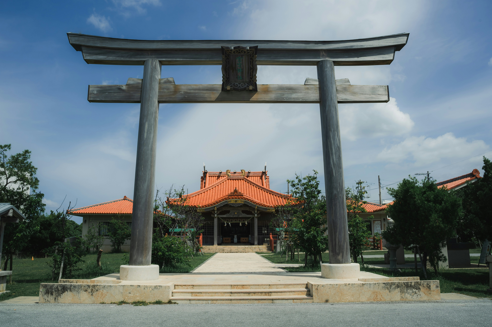

A quiet journal from the island.
This site was created with good intentions — a personal space to talk about a place that changed my perception of life.
Miyakojima has a quiet rhythm. A softness in its people. A way of living that teaches you to slow down, to breathe deeper, and to appreciate what truly matters.
This is not meant to be a tourism guide. It is a journal. A reflection. A space to share stories, memories, friendships, and the culture that makes this island what it is.
If you are someone who cares to read, to understand, and to respect this place — then you are welcome here.
このサイトは、良い気持ちから生まれました。 人生の見方を変えてくれたこの場所について、静かに綴っていく個人的な記録です。
宮古島には、ゆっくりと流れる時間と、人の温かさ、そして暮らしの美しさがあります。
これは観光サイトではありません。 この島の文化や人々への敬意を込めた、小さなジャーナルです。
もしこの場所を理解し、大切にしたいと思ってくださるなら、ここはあなたのための場所です。


